Suoni ambientali per concentrarsi, rilassarsi e dormire
Mescola pioggia, onde, fuoco, bosco, caffè, rumore marrone o battiti binaurali e regola il volume di ogni strato. Gratis, senza limiti di tempo e anche offline.
Inizia ad ascoltareInstallala sul telefono
- Gratis
- Senza account
- Senza pubblicità
- Senza limiti di tempo
- Funziona offline
Che cos’è Domentum
Domentum è un mixer gratuito di suoni ambientali che funziona nel browser. Ha 14 paesaggi sonori (mare, pioggia, falò, bosco, caffè, temporale e altri ancora) e ognuno è fatto di strati che puoi mescolare: le onde, i gabbiani e la barca a vela, ciascuno con il proprio volume.
I suoni della natura sono vere registrazioni sul campo. Il rumore (marrone, rosa, bianco e grigio) e i battiti binaurali vengono generati sul tuo dispositivo, quindi non si ripetono mai. Suona senza limiti di tempo, funziona offline e si installa sul telefono come un’app.
14 paesaggi sonori, strato per strato
Aprine uno qualsiasi e regola ogni strato come preferisci. Puoi anche ascoltarne fino a quattro alla volta.
-
Oceano
Mare aperto da una barca a vela: onde, gabbiani, frangenti, il suono sott’acqua e il canto delle balene.
- Barca a vela
- Onde
- Gabbiani
- Frangenti
- Sott’acqua
- Balene
-
Pioggia
Pioggia costante e gocce che tamburellano su un ombrello. Un classico per dormire o concentrarsi.
- Pioggia
- Ombrello
-
Rumore
Rumore marrone, rosa, grigio e bianco, una cabina d’aereo e un coprivoci. Generato in tempo reale, non si ripete mai.
- Marrone
- Rosa
- Grigio
- Bianco
- Aereo
- Coprivoci
-
Binaurale
Battiti binaurali delta, theta, alfa, beta e gamma, più una versione su musica ambient generativa. Da ascoltare in cuffia.
- Delta
- Theta
- Alfa
- Beta
- Gamma
- Musica
-
Falò
Il crepitio del fuoco e una notte tranquilla in campeggio.
- Fuoco
- Notte
-
Spiaggia
Onde sulla riva, brezza marina e gabbiani in lontananza.
- Onde
- Brezza
- Gabbiani
-
Treno
Il ritmo dei binari e il vento di un lungo viaggio in treno.
- Binari
- Vento
-
Bosco
Canto degli uccelli, vento tra gli alberi e insetti.
- Uccelli
- Vento
- Insetti
-
Giardino
Campanelle a vento, insetti e una brezza leggera.
- Campanelle
- Insetti
- Vento
-
Caffè
Il brusio di un bar, con la macchina dell’espresso in sottofondo.
- Brusio
- Macchina del caffè
-
Temporale
Tuoni, acquazzone, vento e pioggia su un ombrello.
- Tuoni
- Acquazzone
- Vento
- Ombrello
-
Ruscello
Acqua che scorre tra i sassi e un vento leggero.
- Acqua
- Vento
-
Ufficio
Voci, stampante, aria condizionata, fotocopiatrice e tastiera: rumore d’ufficio per chi lavora da casa.
- Voci
- Stampante
- Aria condizionata
- Fotocopiatrice
- Tastiera
-
Personalizzato
Il tuo mix: qualsiasi suono di qualsiasi paesaggio, più i tuoi file audio.
Ascolta Personalizzato
Rumore e battiti binaurali, generati sul tuo dispositivo
A differenza delle registrazioni, vengono sintetizzati in tempo reale nel browser, quindi non c’è nessun loop.
- Rumore marrone
- Profondo e avvolgente, con quasi tutta l’energia nelle basse frequenze. Per molti è il migliore per concentrarsi.
- Rumore rosa
- Equilibrato, come una pioggia costante. Più morbido del rumore bianco.
- Rumore grigio
- Calibrato perché l’orecchio umano percepisca tutte le frequenze con la stessa intensità.
- Rumore bianco
- Brillante e uniforme. Ottimo per coprire i suoni acuti.
- Cabina d’aereo
- Il ronzio costante di un aereo in volo di crociera.
- Coprivoci
- Concentrato sulla banda di frequenze della voce, per mascherare le conversazioni vicine.
Battiti binaurali
Ogni orecchio sente un tono leggermente diverso e il cervello percepisce la differenza come una pulsazione lenta. Funzionano solo con le cuffie.
- Delta2 HzSonno profondo
- Theta6 HzMeditazione e creatività
- Alfa10 HzCalma vigile
- Beta16 HzAttenzione attiva
- Gamma40 HzConcentrazione intensa
- Musica10 HzAlfa su un tappeto ambient generativo che non si ripete mai
Domentum è pensato per rilassarsi e concentrarsi. Non è un trattamento medico.
Come funziona
Un volume per ogni strato
Ogni paesaggio è fatto di strati. Alza la pioggia, abbassa i tuoni, togli i gabbiani: il mix lo decidi tu.
Senza limiti di tempo
Suona per tutto il tempo che vuoi. I loop si fondono in dissolvenza incrociata, così lo stacco non si sente mai.
Fino a quattro insieme
Pioggia in una notte davanti al falò, un caffè in pieno temporale… Combina fino a quattro paesaggi.
Tutti i suoni, a scelta
Scegli singoli suoni da qualsiasi paesaggio e crea il tuo mix nel paesaggio Personalizzato.
I tuoi file audio
Importa file mp3, m4a o wav. Restano sul tuo dispositivo e vanno in loop senza interruzioni.
Mix salvati
Salva quello che stai ascoltando e ritrovalo con un tocco. Ci sono già cinque mix pronti.
Timer di spegnimento
Da 15 minuti a 3 ore, con una dissolvenza di 30 secondi alla fine.
Variazione naturale
Il volume di ogni strato oscilla leggermente, come succede in natura, così il loop non suona mai meccanico.
Funziona offline
Installala e scarica tutto (59 MB) per ascoltare senza connessione.
Privacy al primo posto
Nessun account, nessuna pubblicità, nessun tracciamento. Impostazioni e file non lasciano mai il tuo dispositivo.
Per concentrarsi, dormire e staccare
Concentrazione e studio
Rumore marrone, un caffè o la pioggia per coprire le distrazioni mentre lavori o studi.
Sonno
Il rumore della pioggia, delle onde o di un falò per dormire, con il timer che sfuma piano piano quando ormai dormi.
Relax e meditazione
Un bosco, un ruscello o battiti theta per rallentare il ritmo.
Coprire i rumori
Il coprivoci e il rumore bianco contro vicini rumorosi, open space o traffico.
Un’alternativa gratuita a Momentum, Noisli e altre app di suoni
Cercavi i paesaggi sonori di Momentum, un mix di Noisli, A Soft Murmur o myNoise? Domentum fa lo stesso in un’unica app web, gratuita, senza account e senza limiti giornalieri.
Nessun limite giornaliero
Alcune app limitano quanto puoi ascoltare gratis: i paesaggi sonori di Momentum, per esempio, offrono un’ora gratuita al giorno. In Domentum ogni paesaggio suona per tutto il tempo che vuoi.
Nessuna versione a pagamento
Molte app di suoni tengono i migliori dietro un abbonamento. In Domentum non c’è nulla da sbloccare: i 14 paesaggi, il rumore e i battiti binaurali sono gratuiti.
Strato per strato
Come con Noisli o A Soft Murmur, mescoli i suoni; Domentum in più divide ogni paesaggio in strati da regolare uno per uno, e ti permette di combinarne fino a quattro.
Un’app vera, non un’estensione
Momentum vive nella nuova scheda del browser. Domentum è un’app indipendente: si installa sul telefono o sul computer e funziona offline.
Domentum è un progetto indipendente e non ha legami con Momentum, Noisli, A Soft Murmur, myNoise né con altre app citate. I loro nomi appartengono ai rispettivi proprietari.
Undici stili, in chiaro e in scuro
Il suono è lo stesso; l’aspetto lo scegli tu. Ogni stile ha i suoi controlli, le sue animazioni e i suoi menu.
-
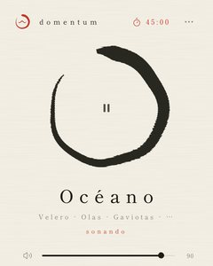
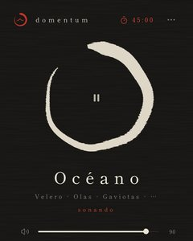
Inchiostro zenCarta di riso, inchiostro e un ensō. Lo stile predefinito. -
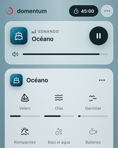
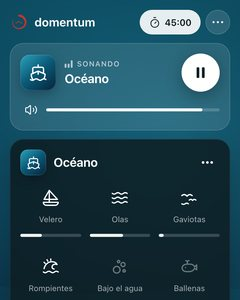
VetroVetro smerigliato su un paesaggio animato. -
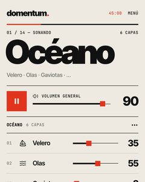
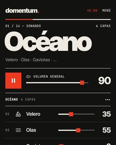
Editoriale svizzeroCarta, una griglia rigorosa e caratteri enormi. -
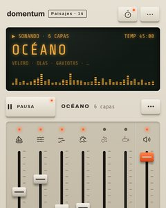
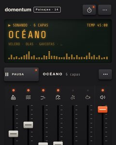
Console hi-fiFader, VU meter e tasti anni Settanta. -
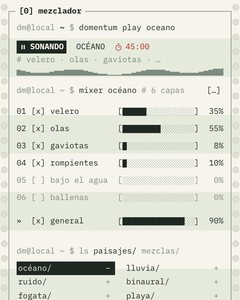
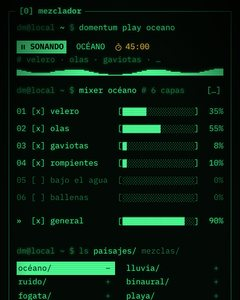
TerminaleFosfori verdi e testo a spaziatura fissa. -
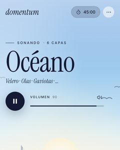
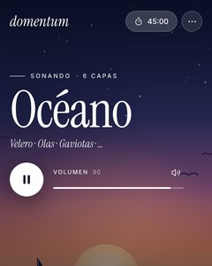
CinemaIl paesaggio a schermo intero. -
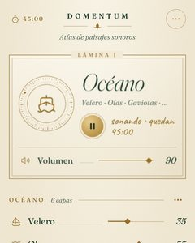
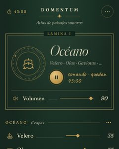
Atlante naturalisticoTavole in verde bosco e oro. -
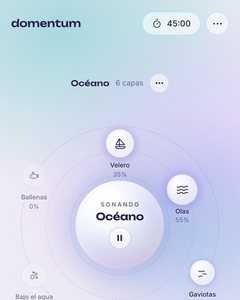
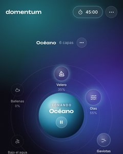
Aurora orbitaleStrati in orbita attorno a una sfera di luce. -
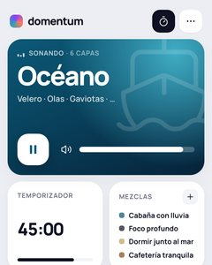
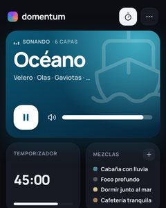
BentoSchede chiare di varie dimensioni. -
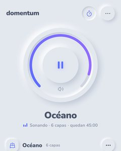
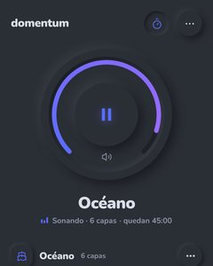
NeumorficoRilievi morbidi, quadranti e manopole. -
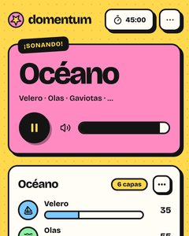
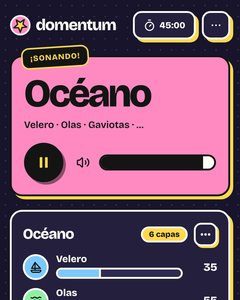
Pop neobrutalistaGiallo, bordi spessi e adesivi.
Installala sul telefono
Domentum è una web app: si installa dal browser, senza passare da un app store, e si apre a schermo intero come qualsiasi altra app.
iPhone e iPad
- Apri Domentum in Safari.
- Tocca Condividi (il quadrato con la freccia).
- Scegli Aggiungi alla schermata Home.
Android
- Aprila in Chrome.
- Apri il menu ⋮.
- Tocca Installa app o Aggiungi a schermata Home.
Computer
- Aprila in Chrome o Edge.
- Fai clic sull’icona di installazione nella barra degli indirizzi.
- Si apre in una finestra tutta sua.
Poi apri il menu ⋯ dell’app e tocca «Descargar todo» (scarica tutto) per ascoltare offline.
Domande frequenti
Domentum è gratis?
Sì. È tutto gratis: niente account, niente pubblicità, niente abbonamenti e nessun limite giornaliero.
Domentum è la stessa cosa di Momentum?
No. I nomi si somigliano, ma Domentum è un’app indipendente di suoni ambientali, senza legami con l’estensione per browser Momentum. I suoi suoni sono gratuiti e suonano senza limiti di tempo.
Domentum è un’alternativa gratuita a Noisli?
Sì. Come Noisli, ti permette di mescolare suoni ambientali; Domentum è completamente gratuito, divide ogni paesaggio in strati e funziona offline.
C’è un limite di tempo?
No. I suoni continuano finché vuoi. Se preferisci, imposta un timer: si spegneranno da soli, in dissolvenza.
Funziona offline?
Sì. Installala e scarica tutti i suoni (59 MB) dal menu; da lì in poi funziona senza connessione. Gli strati che hai già ascoltato vengono salvati automaticamente.
Serve un account?
No. I tuoi mix, i volumi e le impostazioni vengono salvati solo sul tuo dispositivo.
Posso mescolare più paesaggi?
Sì, fino a quattro insieme, ognuno con i suoi volumi. Con «Todos los sonidos» (tutti i suoni) puoi anche combinare singoli strati di paesaggi diversi.
Che cos’è il rumore marrone?
Un rumore con più energia nelle basse frequenze rispetto al rumore bianco o rosa. Ha un suono profondo, come una cascata lontana, e molte persone lo usano per concentrarsi o per dormire.
I battiti binaurali funzionano con gli altoparlanti?
No. Ogni orecchio deve sentire un tono diverso, quindi servono le cuffie.
Posso usare i miei suoni?
Sì. Importa file mp3, m4a, wav e altri formati audio nel paesaggio Personalizzato. Restano sul tuo dispositivo e vanno in loop senza interruzioni.
Da dove vengono i suoni?
Sono registrazioni sul campo di Freesound, rilasciate nel pubblico dominio (CC0). Il rumore e i battiti binaurali vengono generati in tempo reale sul tuo dispositivo.
Su quali dispositivi funziona?
Su qualsiasi browser moderno: iPhone, iPad, Android, Windows, macOS e Linux. Puoi anche installarla come app.
In che lingua è l’app?
Per ora il player è in spagnolo. È semplice da usare, e i suoni non hanno bisogno di parole.